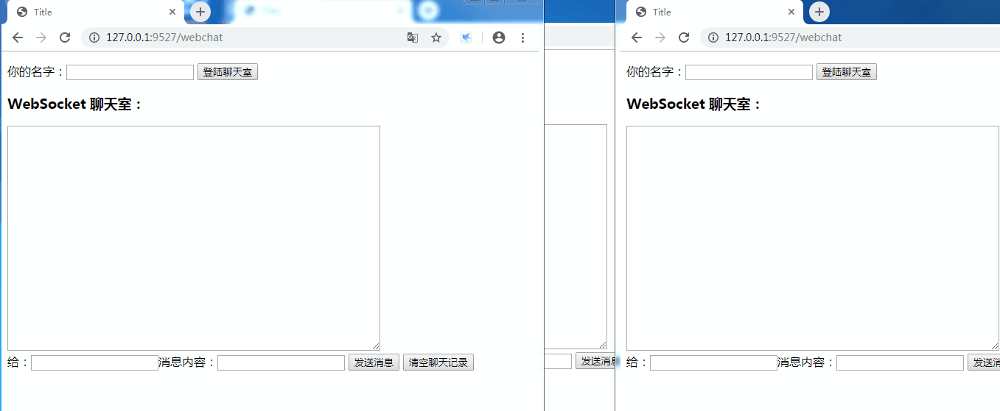

1、安装gevent-websocket
pip install -i https://pypi.tuna.tsinghua.edu.cn/simple/ gevent-websocket2、chat.py文件内容如下：
from flask import Flask,request,render_template
import json
from geventwebsocket.handler import WebSocketHandler
from gevent.pywsgi import WSGIServer
from geventwebsocket.websocket import WebSocket
user_dict = {}
chat_app = Flask(__name__)
@chat_app.route('/ws/<username>')
def ws_chat(username):
user_socket = request.environ.get('wsgi.websocket') # type:WebSocket
user_dict[username]=user_socket
while 1:
msg = user_socket.receive() # 等待接收客户端发来的数据
msg_dict = json.loads(msg)
msg_dict['from_user'] = username
to_user = msg_dict.get('to_user')
if to_user == "": # 如果用户名是空表示群发
for uname, uwebsocket in user_dict.items():
if uname == username: # 群发时不用给自己发
continue
uwebsocket.send(json.dumps(msg_dict))
continue
to_user_socket = user_dict.get(to_user)
if not to_user_socket: # 判断用户字典中是否存在用户的websocket连接
continue
try:
msg_dict['from_user'] = msg_dict['from_user'] + '@私聊我'
to_user_socket.send(json.dumps(msg_dict))
except:
user_dict.pop(to_user)
@chat_app.route('/webchat')
def webchat():
return render_template('public_chat.html')
if __name__ == '__main__':
server = WSGIServer(('0.0.0.0',9527),chat_app,handler_class=WebSocketHandler)
server.serve_forever()3、web_chat.html文件部分内容如下：
<p>你的名字：<input type="text" id="username">
<button onclick="open_ws()">登陆聊天室</button>
</p>
<form onsubmit="return false;">
<h3>WebSocket 聊天室：</h3>
<textarea id="responseText" style="width: 500px; height: 300px;"></textarea>
<br>
给：<input type="text" id="to_user">消息内容：<input type="text" id="message">
<input type="button" value="发送消息" onclick="send_msg()">
<input type="button" onclick="javascript:document.getElementById('responseText').value=''"
value="清空聊天记录">
</form>4、js代码如下：
<script type="application/javascript">
var ws = null;
function open_ws() {
var username = document.getElementById('username').value;
ws = new WebSocket("ws://192.168.16.239:9527/ws/" + username);
ws.onopen = function () {
alert("登陆成功");
};
ws.onmessage = function (eventMessage) {
// 显示消息记录
var chat = JSON.parse(eventMessage.data);
console.log(chat);
var chat_content = document.getElementById('responseText');
chat_content.value = chat_content.value + "\n" + chat.from_user + " : " + chat.chat;
};
}
function send_msg() {
// 发送消息
var to_user = document.getElementById("to_user").value;
var msg = document.getElementById("message").value;
var send_str = {
to_user: to_user,
chat: msg
};
ws.send(JSON.stringify(send_str));
var chat_content = document.getElementById("responseText");
chat_content.value = chat_content.value + "\n" + "我： " + msg;
}
</script>最终的效果图如下：
